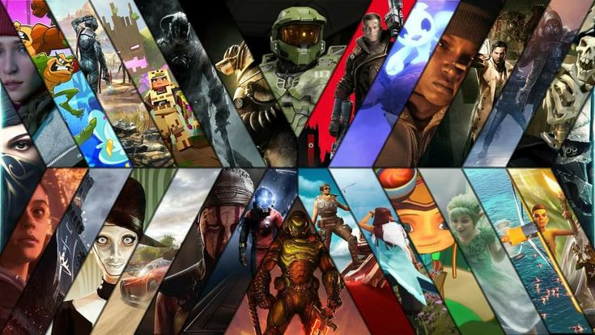
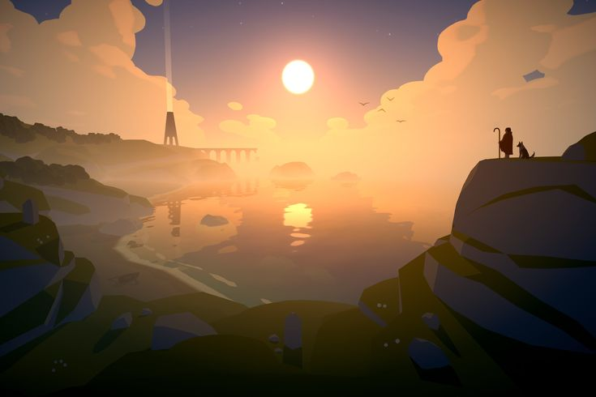
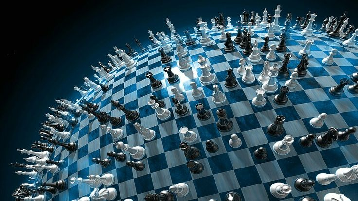

Macam-Macam Genre Game
Setiap game memiliki genre yang berbeda. Genre game biasanya menentukan cara bermain, tujuan permainan, dan pengalaman yang dirasakan pemain.

Action
Genre Action adalah jenis game yang membutuhkan kecepatan, refleks, dan ketepatan pemain saat menghadapi tantangan.

Adventure
Genre Adventure berfokus pada petualangan, eksplorasi tempat baru, dan alur cerita yang menarik.

Strategy
Genre Strategy membutuhkan perencanaan, pengambilan keputusan, dan kemampuan mengatur strategi.
| Genre | Fokus Utama | Cocok Untuk |
|---|---|---|
| Action | Kecepatan dan refleks | Pemain yang suka tantangan cepat, adrenalin, dan aksi seru. |
| Adventure | Eksplorasi dan cerita | Pemain yang suka petualangan, cerita menarik, dan dunia yang luas. |
| strategy | Perencanaan dan taktik | Pemain yang suka berpikir sebelum bertindak, merencanakan strategi, dan mengatur sumber daya. |